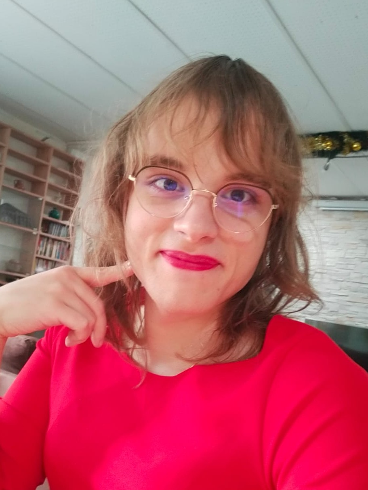

Mathieu Chanavat
 I am a graduate student in math and computer science. My main are category theory, homotopy theory and their application to computer science. I'm currently doing an intership under the supervision of Pierre-Louis Curien about this paper about cubical type theory and how we can give comptutational content to the univalence axiom. I'll be interested in starting a PhD in this area by fall 2023.
After 3 years of "classe préparatoire" (intense lessons of math and physics), I went for three years at École Centrale Lille were I studied general computer science, AI and data science. During these three years, I also obtained a bachelor and a master of mathematics, focused on probabilites and functional analysis. During the year 2021-2022, I was at the LMFI master where I developed my skills about theoretical computer science, category theory, homotopy theory, and logic in general. Here's a CV